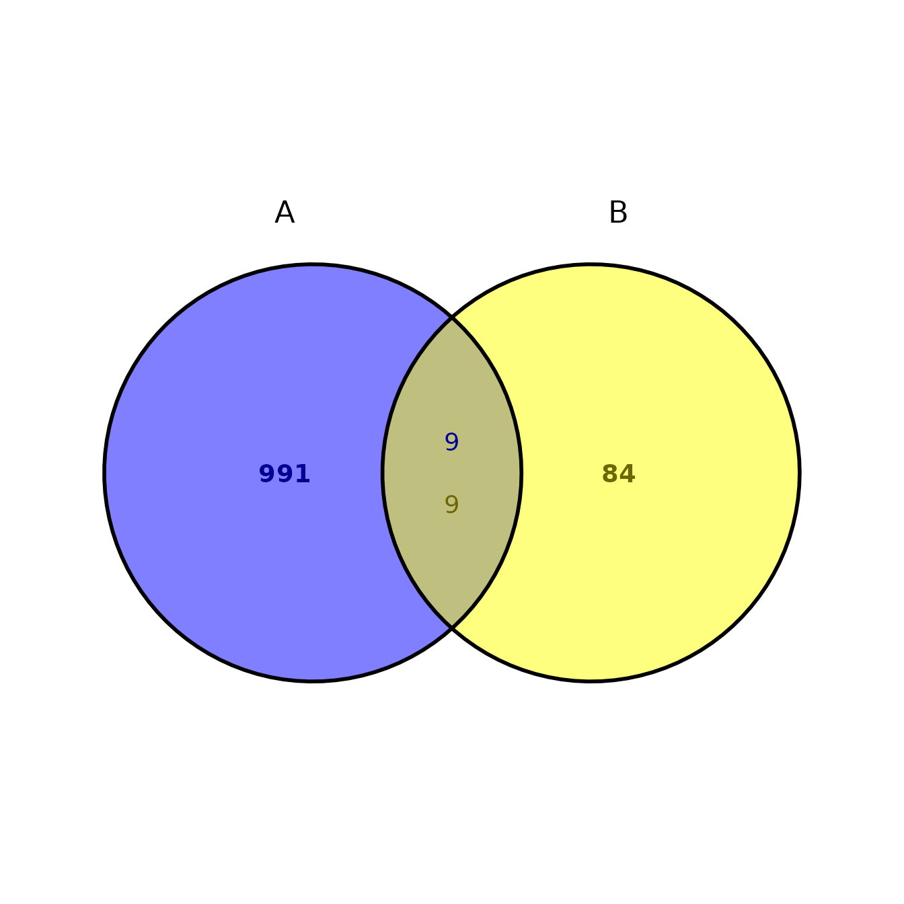
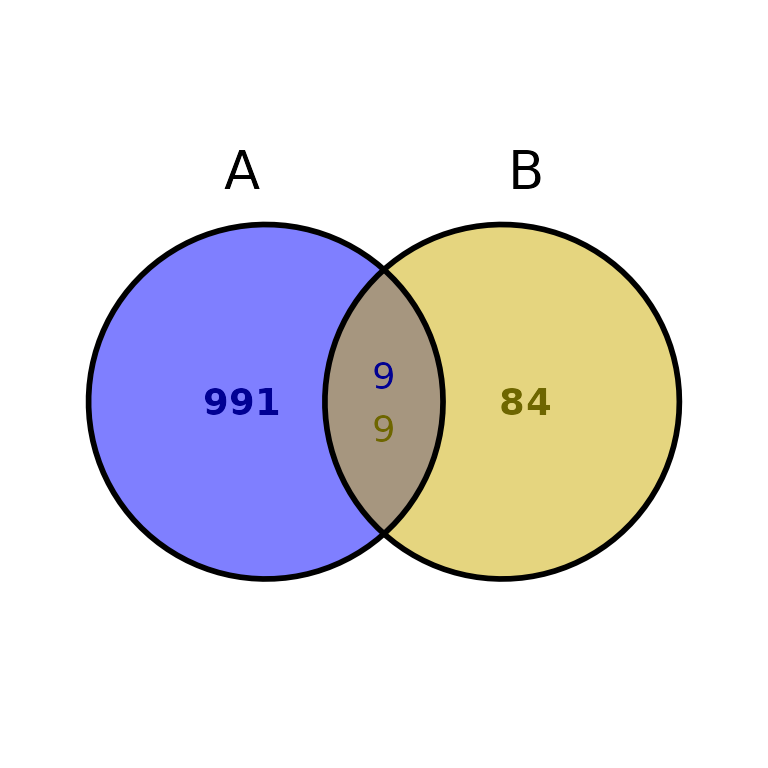
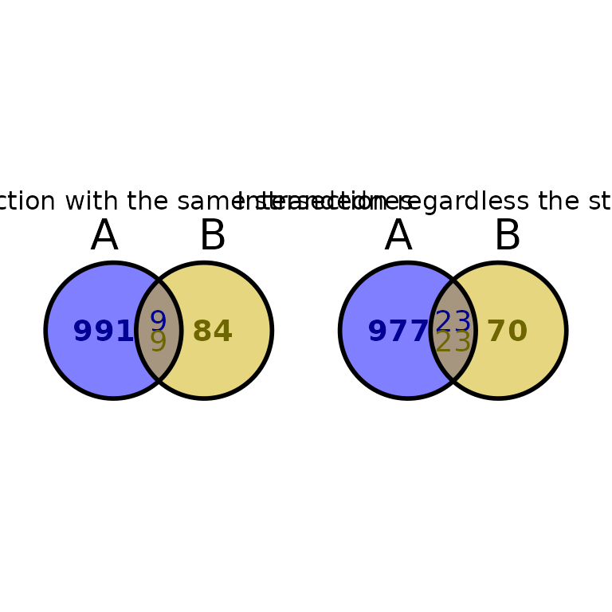
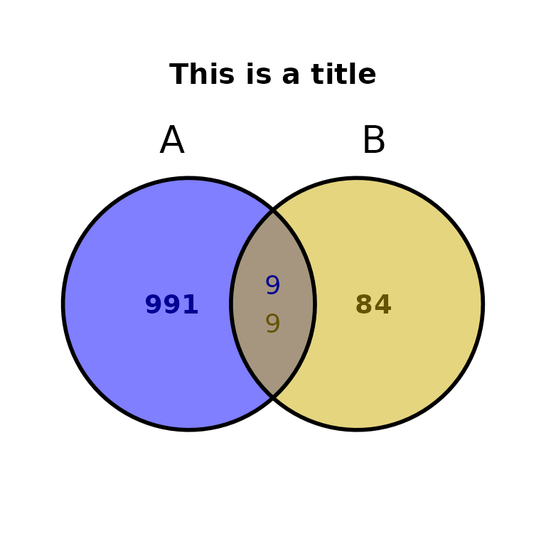
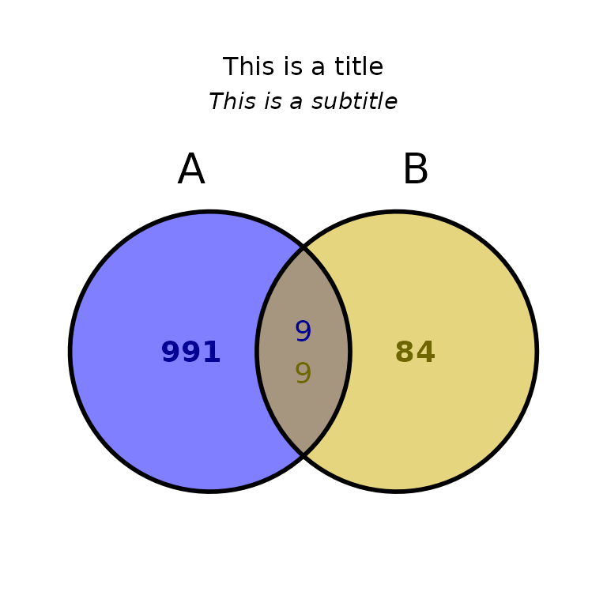
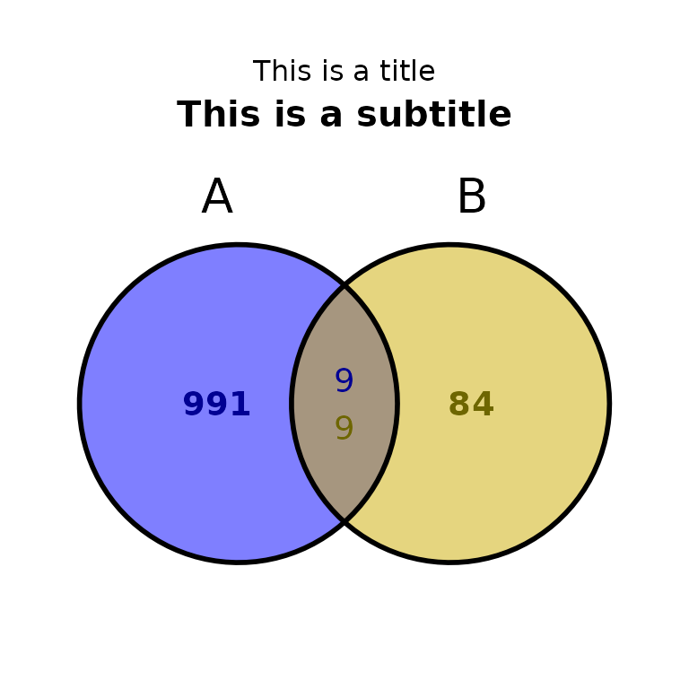
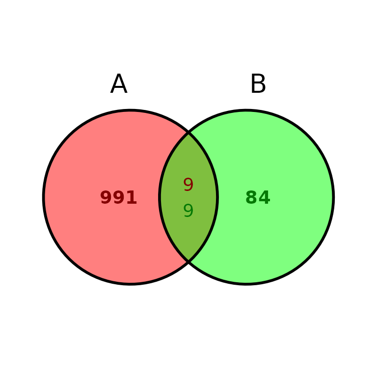
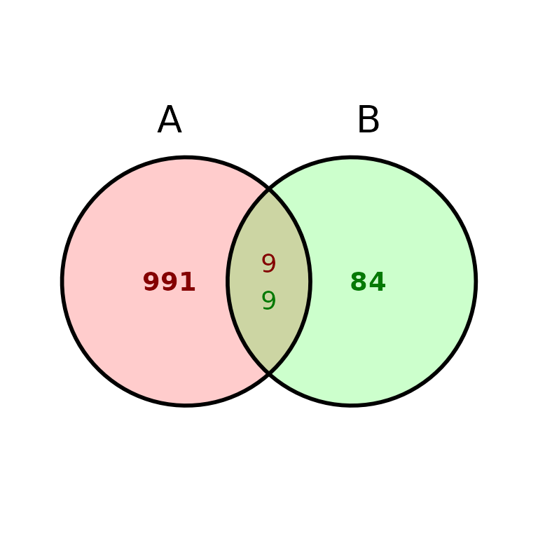
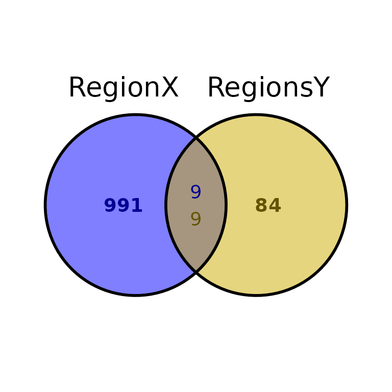
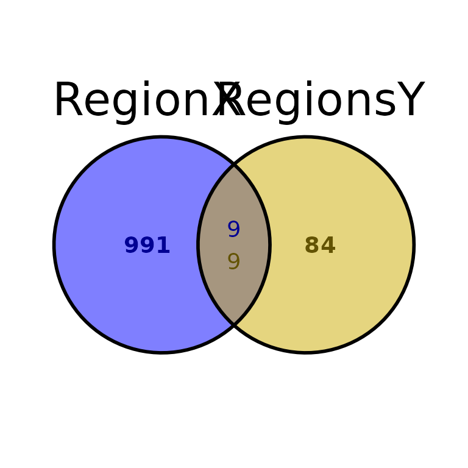

Last updated: 2022-06-02
ggVennBed()
ggVennBed() draws an Venn diagram plot with the intersections of two BED files (A and B). It counts the number of unique regions in A and B, as well as the regions from A intersecting with B and viceversa. It uses the function ggvenn() from the ggvenn package, and the function bt.intersect() from the bedtoolsr package.
Look at the ggvenn package documentation.
Look at the bedtoolsr package documentation.
As input, ggVennBed() takes two data frames in BED format or the paths to two BED-like files.
# Example input.
regionsX_path = "../testdata/regionsX.bed"
regionsY_path = "../testdata/regionsY.bed"
regionsX = read.delim(regionsX_path, header = F)
regionsY = read.delim(regionsY_path, header = F)
head(regionsX)## V1 V2 V3 V4 V5 V6
## 1 chr1 4598409 4598766 peak_2 358 +
## 2 chr1 7498822 7499889 peak_5 1068 +
## 3 chr1 9780318 9780582 peak_8 265 +
## 4 chr1 9943458 9944059 peak_9 602 +
## 5 chr1 24107692 24108215 peak_18 524 +
## 6 chr1 37300732 37300976 peak_20 245 +You can run ggVennBed using the paths to two BED files:
ggVennBed(a = regionsX_path, b = regionsY_path)
Or use two different data frames in BED-like format:
ggVennBed(a = regionsX, b = regionsY)
By default, ggVennBed() intersects the regions with the same strandedness (bedtools intersect -s -u -a regionA -b regionB). To change this behaviour, change stranded to FALSE or NULL.
ggVennBed(a = regionsX, b = regionsY, stranded = TRUE) + ggtitle("Intersection with the same strandednes") +
ggVennBed(a = regionsX, b = regionsY, stranded = FALSE) + ggtitle("Intersection regardless the strand")
ggVennBed(a = regionsX, b = regionsY, title = "This is a title", title_size = 15, title_face = "bold")
ggVennBed(a = regionsX, b = regionsY, title = "This is a title", subtitle = "This is a subtitle")
ggVennBed(a = regionsX, b = regionsY, title = "This is a title", subtitle = "This is a subtitle", subtitle_size = 15, subtitle_face = "bold")


ggVennBed(a = regionsX, b = regionsY, labsize = 10)

Since ggVennBed() outputs a ggvenn-based Venn diagram and ggvenn is based in ggplot2, it can be further customized with scales, theme, etc…